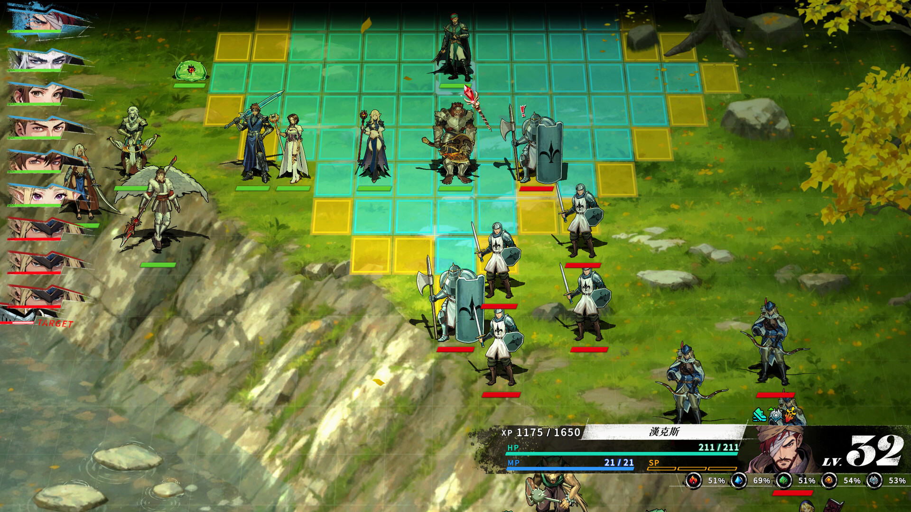
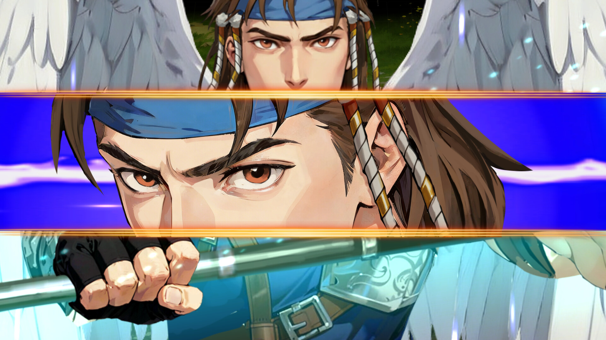
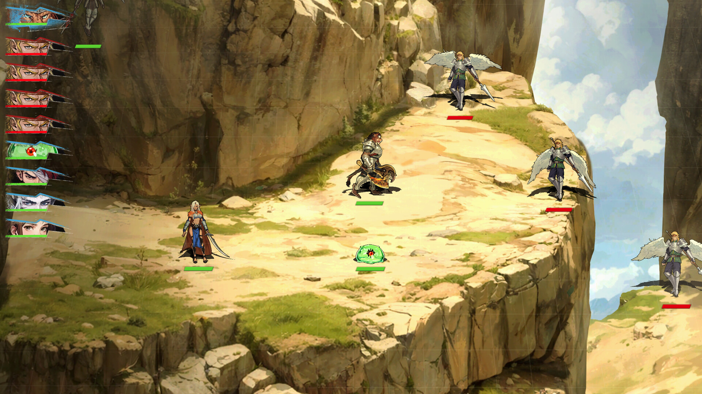

환세록 리메이크 스팀 출시 D-8, 원작 아시는 분ㆍ처음 보시는 분 다르게 챙길 것들
환세록, 이라는 이름 얼핏 들어보신 분들 계실 텐데요. 주인장도 이 제목을 들으면 어렴풋이 옛날 SRPG 하나가 떠오르긴 하는데, 정작 자세한 내막은 이번에 스팀 페이지랑 이런저런 소식들을 찾아보면서야 제대로 알게 됐습니다. 그 환세록을 새로 만든 리메이크작이 이제 스팀 정식 출시를 코앞에 두고 있어서, 원작을 아셨던 분ㆍ이번에 처음 이름 들으시는 분 각각 챙기시면 좋을 내용으로 정리해 봤습니다.
1. 환세록 리메이크가 뭐냐 - 원작 아시는 분이면 반가우실 이야기
환세록 리메이크는 1998년 국내에 소개됐던 SRPG '환세록'을 유저조이(USERJOY Technology Co., Ltd.)가 새로 만들어 스팀에 내놓는 작품입니다.
스팀 페이지 기준으로 개발과 배급을 유저조이가 단독으로 맡고 있고, 공식 영문 타이틀은 'The Legend of Fancy Realm Remake'더라고요. 장르는 어드벤처ㆍRPGㆍ전략으로 등록돼 있어서, 순수 전략 SRPG보다는 캐릭터 서사 비중도 꽤 진하게 다루는 모양입니다.

보시면 격자형 전장에서 아군ㆍ적군이 마주선 전투 화면이에요. 왼쪽엔 턴 순서대로 캐릭터 초상화랑 체력바가 쭉 나열돼 있고, 오른쪽 아래엔 지금 턴인 캐릭터의 HPㆍMPㆍSP까지 자세히 뜨네요.
이미지 출처: Steam 공식 상점 페이지 (ⓒUSERJOY Technology)
2. 근데 환세록, 사실 국산이 아니었다구요(?)
많은 분들이 환세록을 국산 SRPG로 기억하고 계시지만, 정확히는 대만 오딘소프트(Odinsoft)가 1995년에 만든 게임을 1998년 국내 소프트월드가 '판타스틱 택틱스'라는 이름으로 들여와 소개한 작품이라고 알려져 있습니다.🔍 원작 계보 확인
국내 게임 잡지 PC챔프 1999년 2월호에도 이 수입 사실이 언급된 걸로 기록돼 있어서, 단순 커뮤니티 뇌피셜이 아니라 근거가 붙은 얘기더라고요. 주인장도 이번에 찾아보기 전까진 그냥 국산 게임으로만 알고 있었는데, 원작을 아셨던 분들한테도 나름 새로운 정보가 될 만합니다.
1998년 당시 원작 개발사와 지금 리메이크를 만드는 유저조이가 정확히 같은 회사인지는 스팀 페이지에 별도 언급이 없어 딱 잘라 확인하긴 어렵더라고요(대만 게임업계는 그 사이 합병ㆍ사명 변경이 잦아서 완전히 다른 회사라고 단정하기도 애매합니다). 어느 쪽이든 원작 감성을 이어받아 리메이크로 다시 만든 작품이라는 점은 분명합니다.
3. 출시일은 D-8인데, 스팀 페이지엔 9일로도 뜨더라고요
환세록 리메이크의 정식 출시일은 한국 시간 기준으로 2026년 9월 10일입니다.
스팀 상점 페이지 안에 초 단위로 찍혀 있는 출시 시각 값을 직접 확인해서 한국 시간으로 환산해보면 9월 10일 오후 1시가 나오더라고요. 그런데 재밌게도 상점 페이지를 여는 시간대에 따라 화면에 찍히는 날짜가 9일로 보일 때가 있습니다. 접속하는 쪽 시간대 기준으로 페이지 표시가 달라지는 걸로 보이는데, 스팀이 정확히 어떤 기준으로 이렇게 갈리는지는 공식적으로 밝히진 않아서 그 이상은 저도 단정하기 어렵습니다. 아무튼 스팀 페이지 들어가셨을 때 날짜가 하루 다르게 떠도 당황하지 마시고, 한국 기준으론 9월 10일이라고 기억해 두시면 됩니다.
국내에서도 유저조이가 9월 10일 PC 스팀 정식 출시를 예고했다는 소식이 전해졌고요, 이 날짜가 위에서 확인한 한국 시간 환산값이랑 정확히 맞아떨어집니다.
| 항목 | 내용 |
|---|---|
| 정식 출시일(한국 시간) | 2026년 9월 10일 |
| 플랫폼 | Windows(PC) — Mac·Linux 미지원 |
| 가격 | 아직 공개되지 않음(미정) |
4. 지원 언어랑 음성 확인해봤는데, 한국어는 자막만이더라고요
지원 언어는 영어ㆍ중국어 간체ㆍ중국어 번체ㆍ일본어ㆍ한국어 5개인데, 이 중 음성 더빙이 들어가는 언어는 중국어 번체 하나뿐이고 한국어는 자막으로만 지원됩니다.
저도 처음엔 한국어 더빙까지 되는 줄 알았는데, 스팀 페이지의 지원 언어 표를 자세히 보니 음성 지원 표시(*)가 중국어 번체 옆에만 붙어 있더라고요. 한국어로 즐기실 분들은 자막 플레이가 기본이라고 생각하시면 됩니다.
| 언어 | 자막 | 음성 |
|---|---|---|
| 영어 | 지원 | 미지원 |
| 중국어 간체 | 지원 | 미지원 |
| 중국어 번체 | 지원 | 지원 |
| 일본어 | 지원 | 미지원 |
| 한국어 | 지원 | 미지원 |
5. 데모는 실제로 있어요, 근데 세이브 연동은 아직 확실치 않습니다
환세록 리메이크는 데모가 별도 앱(appid 4778780)으로 스팀에 이미 올라와 있고, 스크린샷 6장과 트레일러 2개도 정상적으로 게시돼 있습니다.
데모 페이지를 들어가 보니 패치 이력도 있더라고요. 검은 화면이랑 명중률 버그를 고친 업데이트가 올라온 걸 보면, 개발진이 정식 출시 전까지 데모를 꾸준히 다듬고 있는 것 같습니다. 관심 있으신 분은 정식판 나오기 전에 데모부터 위시리스트 걸어두고 한 번 받아 보셔도 좋을 것 같네요.
데모에서 진행한 세이브가 정식판으로 그대로 이어지는지도 궁금하실 텐데, 이 부분은 아직 완전히 확실치 않습니다. 경향게임스 등 일부 매체는 데모 진행분이 정식판과 연동돼 이어서 즐길 수 있다고 보도했는데, 정작 스팀 공식 상점 페이지 설명문을 직접 뒤져봐도 세이브 연동에 대한 문구는 찾지 못했습니다. 그러니까 있다ㆍ없다 어느 쪽으로도 아직 단정은 어렵고, 정식 출시 즈음에 다시 확인해 보는 게 안전할 것 같습니다.🔍 데모 세이브 연동 공식 확인 필요
6. 전투ㆍ스토리는 어떤 느낌이냐
환세록 리메이크는 신마대전 이후 만 년이 지난 대륙 '파루시온'을 배경으로, 흔들리는 평화의 맹약 속에서 플레이어가 변화의 중심에 서는 정통 턴제 SRPG입니다.
스팀 소개문을 보면 동료와의 관계와 신뢰도가 결말에 영향을 준다는 점, 선택에 따라 전개가 갈리는 분기점, 그리고 다중 엔딩까지 캐릭터 서사 쪽에 힘을 준 걸 알 수 있습니다. 전투는 진형이랑 지형ㆍ길목을 활용하는 전술적 배치에, 캐릭터별 역할이 뚜렷하고 스킬 타이밍이 중요한 정밀 전투로 소개돼 있고요.

지금 보시는 것처럼 날개 달린 캐릭터랑 검을 겨눈 캐릭터가 화면 가득 클로즈업된 컷도 있어요. 전투 연출 중간중간 캐릭터 표정ㆍ감정을 크게 잡아주는 장면이 꽤 있는 것 같습니다.
이미지 출처: Steam 공식 상점 페이지 (ⓒUSERJOY Technology)
이 밖에 챙길 만한 기능들도 있는데요,
- 싱글 플레이어 전용, 스팀 도전 과제 지원
- DualSense 포함 컨트롤러 완벽 지원
- 난이도 조정 가능, 마우스 전용 플레이 옵션도 있음
- 퀵타임 이벤트(QTE) 없이 진행 가능
- 수시 저장ㆍSteam Cloudㆍ가족 공유 지원

이미지 왼쪽을 보면 좁은 절벽 길을 사이에 두고 날개 달린 캐릭터들이랑 다른 아군이 흩어져 서 있죠. 지형을 활용한 배치가 이런 느낌이구나 싶더라고요.
이미지 출처: Steam 공식 상점 페이지 (ⓒUSERJOY Technology)
원작 감성은 유지하면서 그래픽이랑 시스템은 현대적으로 다시 짰다는 게 유저조이가 내세우는 핵심 셀링포인트인데, 처음 접하시는 분들도 부담 없이 들어갈 수 있는 정통파 SRPG로 보시면 될 것 같습니다.
7. PC 사양 체크 - 이 정도면 무난하게 돌아갈지도
PC 사양은 최소ㆍ권장 모두 그렇게 부담스러운 수준은 아닙니다.
| 구분 | 최소 사양 | 권장 사양 |
|---|---|---|
| OS | Windows 7/8.1/10 | Windows 7/8.1/10 |
| CPU | i5-4400 | i5-6400 |
| RAM | 8GB | 16GB |
| GPU | GTX750 2GB / HD7770 2GB | GTX1060 6GB |
| DirectX | DirectX 11 | DirectX 11 |
| 저장공간 | 10GB | 10GB |
권장 사양도 GTX1060 6GB 정도면 되니까, 최근에 산 그래픽카드가 아니어도 크게 무리는 없을 것 같습니다.
참고한 곳
· 환세록 리메이크 스팀 공식 상점 페이지
· 환세록 리메이크 데모 스팀 페이지